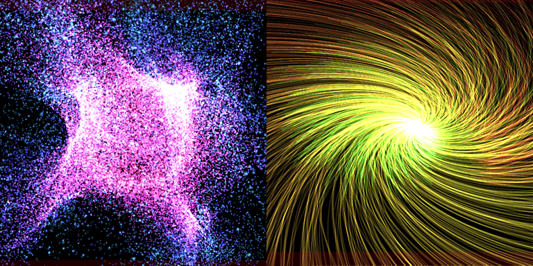

GPU Particles¶
Overview¶
Sets parameters related to GPU particles. The particles of the node set here will be emitters, and GPU particles will be spawned.
While normal particles are processed by the CPU, GPU particles are processed by the GPU, so you can use a large number of particles (MaMore than 1 million particles).

GPU particles are only supported by modern graphics APIs.
| Target | Support | Notes |
|---|---|---|
| DirectX 9 | ❌ | |
| DirectX 11 | ✅ | Shader Model 5.0 or later |
| DirectX 12 | ✅ | |
| OpenGL | ❌ | |
| Vulkan | ✅ | |
| Metal | ✅ | |
| WebGL | ❌ |
| Target | Support | Notes |
|---|---|---|
| Unity | ❌ | Supported in the future |
| Unreal Engine | ❌ | Supported in the future |
| Godot Engine | ❌ | Supported in the future |
Parameters¶
GPU particles are calculated on the GPU, so the functionality is simplified.
Enabled¶
Enable GPU particles if checked.
Basic¶
Settings related to GPU particle spawn. When GPU particles are started, memory is allocated from the particle buffer for Spawn Amount * Time to live.
Spawn count¶
The total number of particles to be spawned.The program will stop after this number of particles have been created.
If Infinity is enabled, it will keep spawning particles indefinitely.
It will stop spawning particles when the parent particle is destroyed or when an external request to stop is made.
Spawn Amount¶
The amount of particles spawned per frame. You can increase the density of particles by increasing this value.
Initial Delay¶
This is the time to start emitting particles. Particle emission can be delayed.
Time to live¶
Lifetime of particles. It affects how fast the various parameters change.
Emission¶
Sets parameters related to the shape of the particle emission source. The actual shape is affected by the transform (Position, Rotation and Scaling) of the parent particle.
Emission Shape¶
Sets the type of shape of the particle emitter.
Supports Point, Line, Circle, Sphere, and Model.
| Point shape | Line shape | Circle shape | Sphere shape | Model shape |
|---|---|---|---|---|
 |
 |
 |
Parameters for Point shape¶
There are no parameters for point shapes.
Parameters for Line shape¶
In the case of a line shape, particles are spawned from a line segment connecting two points at the Start Point and End Point.
If you increase the Line Tickness of the line, it becomes a cone-like shape.
Parameters for Circle shape¶
For a circular shape, particles are spawned from a circle with the Circle Axis as its central axis.
The radius of the circle is determined by the Inner Radius and Outer Radius of the circle.
Parameters for Sphere shapes¶
For spherical shapes, particles are spawned from the surface of a sphere determined by the Sphere radius.
parameters for Model shape¶
For model shapes, the Mesh to use will generate particles from the surface of the model's mesh.
You can specify the Size separately.
Position¶
Set the parameters for the position and movement of the particles.
The particle position is also affected by the Force based on the parameters set here.
Direction¶
This is the direction vector for particle spawn.
Spread¶
The angle to randomly spread particles in the direction of movement when spawning particles. The range is from 0 to 180 degrees; 0 degrees has no randomness, 90 degrees diffuses in a hemispherical shape, and 180 degrees diffuses in all directions.
Initial Speed¶
The speed at which particles are spawned. This parameter affects the initial velocity. A random range can be set.
Damping¶
Damping force during particle motion.Increasing this parameter will slow down the particles as they move. A random range can be set.
Rotation¶
Sets parameters for particle tilt and rotation.
The appearance depends on the billboard settings of the drawing shape.
Fixed affects the XYZ parameters, while Z-axis rotation billboards affect the Z parameters.
Initial Angle¶
Angle (Euler) at particle spawn. A random range can be set.
Angular Velocity¶
The speed at which the particles rotation (Euler). A random range can be set.
Scale¶
Sets the size of the particles and the parameters for scaling them up and down. The behavior changes depending on the mode you set.
In
Fixedmode, the particles are fixed at the zoom factor you set.In
Easingmode, the scale changes from the start point to the end point.
Single Scale¶
Fixed scale, independent of the axis. A random range can be set.
XYZ Scale¶
Fixed scale for each of the XYZ axes. A random range can be set.
Start and End (Single)¶
The start and end scale for axis-independent easing. A random range can be set.
Start and End (XYZ)¶
Scale of the start and end points of easing applied to each of the XYZ axes. A random range can be set.
Force¶
This parameter specifies the effect of externally exerting a force on the particles.
| Gravity | Vortex | Turbulence |
|---|---|---|
 |
 |
 |
Gravity¶
Applies acceleration in the specified direction.It can be applied to the top or right, not necessarily the bottom.This direction is not affected by the attitude of the parent particle.
Vortex¶
Applies a force that rotates around a specified Center Point and Axis.
You can also adjust the force given to the particle from the tornado by changing the Rotational Force and Attraction Force.
Turbulence¶
Vector fields spawned by the Random Seed, Field Scale and Complexity allow particles to make noisy motions.
You can also adjust the force exerted on the particles from turbulence by changing the Power.
Rendering¶
General settings for rendering particles.
Blend¶
Blending settings when drawing.
Depth Write¶
Turn ON to write depth.
Depth Test¶
Turn ON to perform depth test.
Shape¶
Sets the shape of particles when they are drawn.
Shape¶
Select a shape from the following three types.
| Shape Type | Description |
|---|---|
| Sprite | Draws simple quads. |
| Model | Draws user models. |
| Trail | Draws line connecting the locations of the trajectory along which the particles is moving. |
Billboard¶
Specify how the sprite is placed in relation to the particle.
| Billboard Type | Description |
|---|---|
| Rotated Billboard | Sprite rotates along the Z-axis while facing the viewpoint. |
| Directional Billboard | Sprite rotates along Y+ direction to the moving direction while facing the viewpoint side. |
| Fixed Y-Axis | Sprite faces viewpoint side while fixed to Y-axis. |
| Fixed | Sprite orientation follows particle rotation. |
Model¶
Specifies the user model to be drawn.
Trail Length¶
Specifies the length of the trajectory. Increasing this parameter will increase the length of the trajectory and the memory size allocated from the trajectory buffer.
Shape Size¶
Specifies the size of the particle's drawn shape. This is multiplied by the Scale factor parameter. If the shape is a locus, it will affect the thickness.
Color¶
Sets parameters for particle color.
Color inheritance¶
Color Inheritance allows you to influence the color of the parent particle.
Color All¶
Sets the particle's color.
| Color Type | Description |
|---|---|
| Fixed | Sets a fixed color that does not change. |
| Random | Sets two colors that are randomly determined during particle spawn. |
| Easing | Sets the color of the starting point and the end point. The color changes over the particle's lifetime. |
| F-curve | Sets the F-curve depicting the RGBA change. |
| Gradient | Sets the gradient depicting a RGBA change. |
Emissive Scaling¶
Multiplier for particle luminance. This parameter is multiplied by the RGB of the Color All.
Fade-In¶
Makes the particles fade in when they spawned.
Fade-Out¶
Makes the particles fade out when they disappear.
Material¶
Sets the material used to draw the particles.
Material Type¶
| Type | Description |
|---|---|
| Unlit | Not shaded by the light source |
| Lighting | Shaded by the light source |
Color Texture¶
Color textures are used to render particles.
Normal Texture¶
Can be set when the material type is Lighting.
Normal texture used to draw particles.